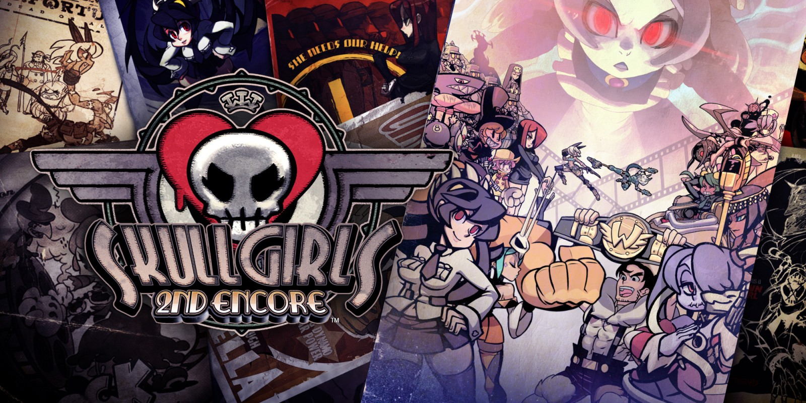
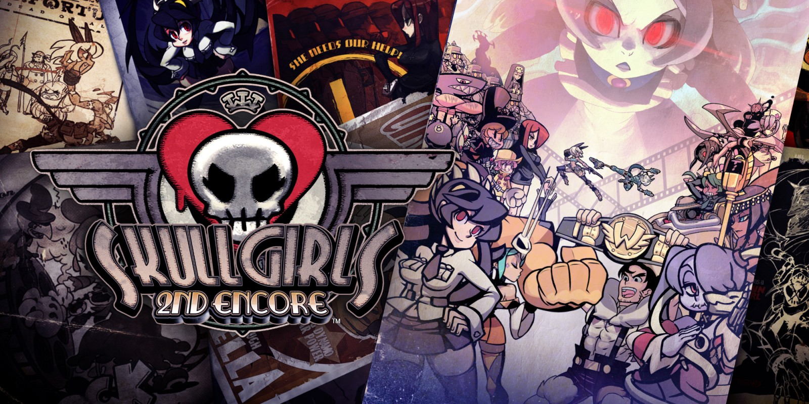

nuestros encantos
1Skullgirls
Skullgirls (En japones: スカルガールズ) es un juego de peleas 2D descargable y desarrollado por Lab Zero Games (anteriormente Reverge Labs) y publicado por Autumn Games y Konami. Fue lanzado para PlayStation Network en Norteamérica el 10 de Abril de 2012 y en Xbox Live Arcade un día más tarde el 11 de Abril de 2012, después fue lanzado en Europa el 2 de Mayo de 2012, finalmente fue lanzada la versión para PC del juego en Steam el 22 de Agosto de 2013, con todas las compras que viene con una versión beta actualizada con frecuencia conocida como la Skullgirls ∞Endless Beta∞..¡
2Historia
Situado en el Reino Canopy, los personajes están luchando por la oportunidad de controlar el misterioso Skull Heart, un artefacto con la capacidad de conceder deseos, aunque a un costo considerable. La Skullgirl es un monstruo que acecha a la humanidad: es el resultado de las que tienen un alma impura por intentar utilizar el Skull Heart.¡
3Caracteristicas
Algo que vuelve único a skullgirls es su combate RPG cada personaje tiene una característica única y especial al igual que cada personaje cuenta con un elemento diferente y esto hace que cada personaje sea mas afectivo contra otros o menos efectivos contra otros, al igual que también cada personaje tiene una habilidad especial como curarse, hacer mas daño en ciertas condiciones etc.
Galeria
 
